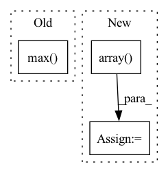

Pattern ID :11360
Before Change
def test_watershed_labeled():
import mahotas as mh
dna = mh.demos.load("nuclear").max( 2)
labeled = mh.cwatershed(dna, mh.regmax(dna))
sizes = mh.labeled.labeled_sum(dna, labeled)
assert len(sizes) == labeled.max() + 1
After Change
[1,2,2,1],
[1,1,2,2]
])
M = np.array( [
[0,0,0,0],
[0,0,1,0],
[0,0,0,0],
[0,0,0,0],
[0,0,0,0],
[0,2,0,0],
[0,0,0,0],
])
labeled = mh.cwatershed(S, M)
sizes = mh.labeled.labeled_sum(S, labeled)
assert len(sizes) == labeled.max() + 1
In pattern: SUPERPATTERN
Frequency: 5
Non-data size: 3
Instances Fragment ID: 38804963
Project Name: luispedro/mahotas
Commit Name: 04fd8d0065799350ce7fad4d65aadc26dc2574a8
Time: 2014-05-11
Author: luis@luispedro.org
File Name: mahotas/tests/test_watershed.py
M Class Name: AnonimousClass
N Class Name: AnonimousClass
M Method Name: test_watershed_labeled(0)
N Method Name: test_watershed_labeled(0)
M Parent Class:
N Parent Class:
M File Name: mahotas/tests/test_watershed.py
N File Name: mahotas/tests/test_watershed.py
M Start Line: 95
M End Line: 96
N Start Line: 95
N End Line: 113
Before Change
i = 0
features_to_remove = []
for feature in data_train.T:
max_count = np.max( np.unique(feature, return_counts=True)[1])
if max_count > 5:
features_to_remove.append(i)
i += 1
ind = np.array([i for i in range(data_train.shape[1])After Change
for feature in data_train.T:
// max_count = np.max(np.unique(feature, return_counts=True)[1])
c = Counter(feature)
max_count = np.array( [v for k, v in sorted(c.items())]) [0]
if max_count > 5:
features_to_remove.append(i)
i += 1 Fragment ID: 38804964
Project Name: vincentstimper/resampled-base-flows
Commit Name: 91abe8b96e7b8f80f26a9552213c03830ea1a1fe
Time: 2021-10-05
Author: vincent.stimper@gmail.com
File Name: larsflow/data.py
M Class Name: AnonimousClass
N Class Name: AnonimousClass
M Method Name: load_hepmass(1)
N Method Name: load_hepmass(1)
M Parent Class:
N Parent Class:
M File Name: larsflow/data.py
N File Name: larsflow/data.py
M Start Line: 79
M End Line: 86
N Start Line: 82
N End Line: 85
Before Change
if pad:
scale = np.min([float(w2)/w1, float(h2)/h1])
else:
scale = np.max( [float(w2)/w1, float(h2)/h1])
M = get_affine_matrix(
center = (w2 / 2.0, h2 / 2.0),
translate = (dx, dy), After Change
dx = (w2 - w1) / 2.0
dy = (h2 - h1) / 2.0
matrix_trans = np.array( [[1.0, 0, dx],
[0, 1.0, dy],
[0, 0, 1.0]])
scale = np.min([float(w2)/w1, float(h2)/h1])
Fragment ID: 38804966
Project Name: yuliangxiu/icon
Commit Name: 5f5c704c4643c183d8a110b5f6c2010c66b84567
Time: 2022-02-24
Author: yuliang.xiu@tuebingen.mpg.de
File Name: lib/pymaf/utils/streamer.py
M Class Name: AnonimousClass
N Class Name: AnonimousClass
M Method Name: aug_matrix(4)
N Method Name: aug_matrix(5)
M Parent Class:
N Parent Class:
M File Name: lib/pymaf/utils/streamer.py
N File Name: lib/pymaf/utils/streamer.py
M Start Line: 6
M End Line: 15
N Start Line: 7
N End Line: 23
Before Change
heatmap: torch.FloatTensor = (feats * weights).sum(dim=1).clamp(0) // (N,H,W)
heatmap = heatmap.view(-1, _input.shape[-2], _input.shape[-1]) // (N,H,W)
heatmap.sub_(heatmap.flatten(start_dim=1).min())
heatmap.div_(heatmap.flatten(start_dim=1).max() )
return heatmap
After Change
weights: torch.FloatTensor = grad.mean(axis=-1, keepdim=True).mean(axis=-1, keepdim=True) // (N,C,1,1)
heatmap: torch.FloatTensor = (feats * weights).sum(dim=1).clamp(0) // (N,H,W)
heatmap = np.array( heatmap.cpu())
heatmap = cv2.resize(heatmap[0], _input.shape[2:])
heatmap = heatmap - np.min(heatmap)
heatmap = heatmap / np.max(heatmap)
return heatmap
Fragment ID: 38804968
Project Name: ain-soph/trojanzoo
Commit Name: 0f8d0e05888b69956b12e4367b28cc62ba6a6981
Time: 2020-11-20
Author: corazju@zju.edu.cn
File Name: trojanzoo/model/imagemodel.py
M Class Name: ImageModel
N Class Name: ImageModel
M Method Name: grad_cam(3)
N Method Name: grad_cam(3)
M Parent Class: Model
N Parent Class: Model
M File Name: trojanzoo/model/imagemodel.py
N File Name: trojanzoo/model/imagemodel.py
M Start Line: 187
M End Line: 200
N Start Line: 206
N End Line: 222
Before Change
i = 0
features_to_remove = []
for feature in data.T:
max_count = np.max( np.unique(feature, return_counts=True)[1])
if max_count > 5:
features_to_remove.append(i)
i += 1
data = data[:, [i for i in range(data.shape[1]) if not i in features_to_remove]]After Change
for feature in data.T:
//max_count = np.max(np.unique(feature, return_counts=True)[1])
c = Counter(feature)
max_count = np.array( [v for k, v in sorted(c.items())]) [0]
if max_count > 5:
features_to_remove.append(i)
i += 1 Fragment ID: 38804971
Project Name: vincentstimper/resampled-base-flows
Commit Name: 91abe8b96e7b8f80f26a9552213c03830ea1a1fe
Time: 2021-10-05
Author: vincent.stimper@gmail.com
File Name: larsflow/data.py
M Class Name: AnonimousClass
N Class Name: AnonimousClass
M Method Name: load_miniboone(1)
N Method Name: load_miniboone(1)
M Parent Class:
N Parent Class:
M File Name: larsflow/data.py
N File Name: larsflow/data.py
M Start Line: 27
M End Line: 28
N Start Line: 28
N End Line: 31